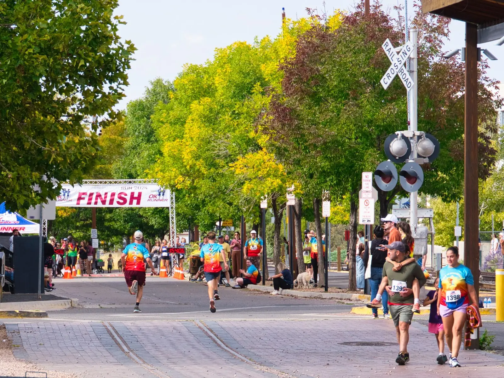
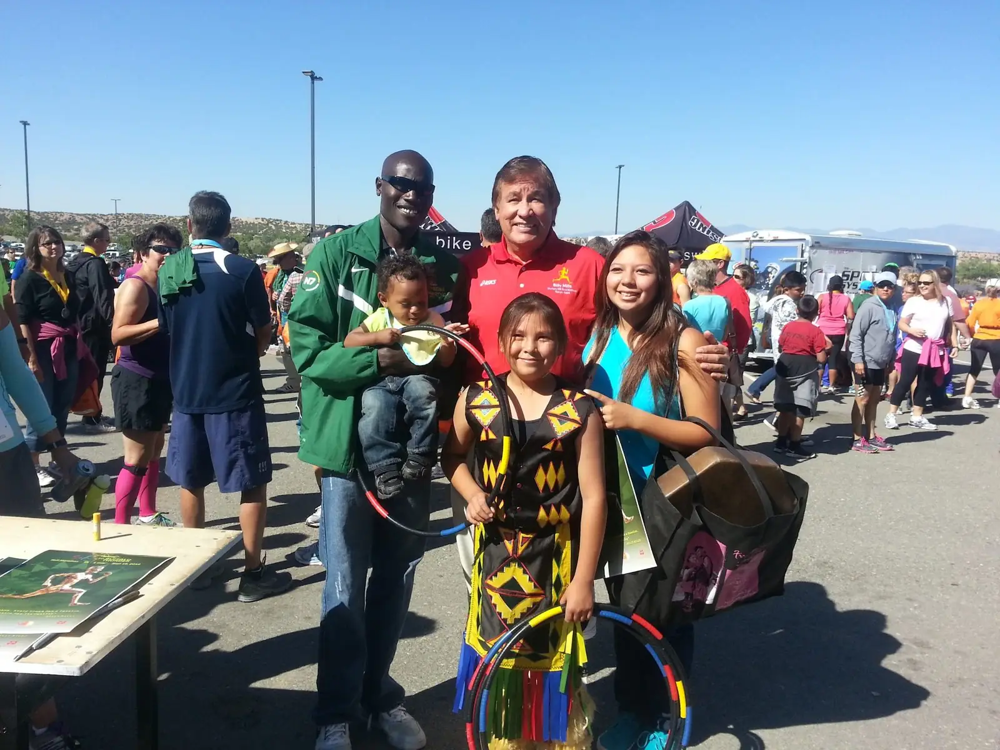
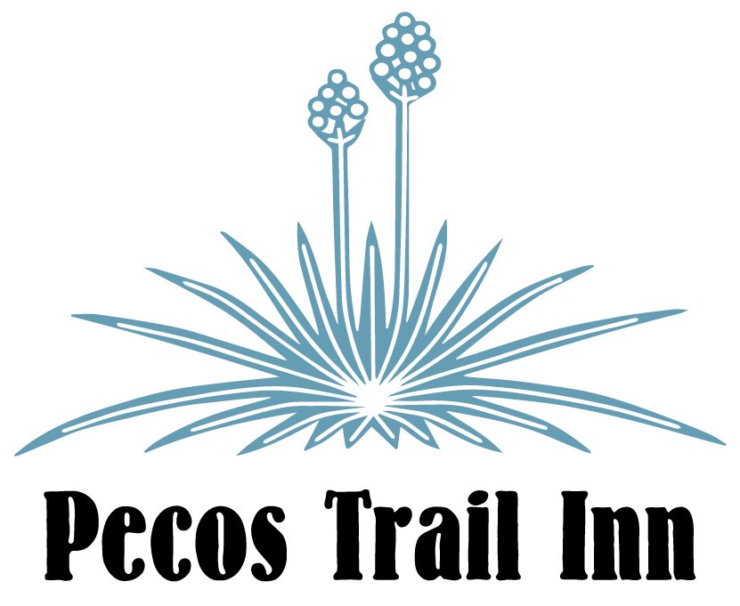

Sunday · September 19, 2027 · 7:30 AM
Run the river into town.
The 6th annual — 13.1 miles from Romero Park in Agua Fria Village, street miles first, then the car-free Santa Fe River Trail to a farm-festival finish at Reunity Resources.
The essentials
Race Info
Everything you need for race weekend — where it starts, where it ends, and how to get your bib.
Start — Agua Fria Village
Romero Park, Agua Fria Village, elevation 6,640 ft.
About the first five miles run city streets, then it's the car-free Santa Fe River Trail. Gun at 7:30 AM MDT — mornings up here are crisp, so dress for the start, not the finish.
Finish — Reunity Resources Farm
Reunity Resources Farm on the Santa Fe River corridor, elevation 6,590 ft.
Course cutoff is 4 hours 30 minutes — course support ends at 12:00 PM. Live results post as you cross the line.
Packet Pickup
All events pick up at Reunity Resources Farm:
Friday 10 AM–6 PM and Saturday 10 AM–5 PM.
5K and 10K bibs are mailed about a week before race day (collect shirts at Reunity). Sunday race-morning pickup (Half & Relay) is for emergencies only, 6–7 AM.
Race weekend
Schedule of Events
Three days at a glance — packet pickup Friday and Saturday at Reunity Resources Farm, short races Saturday, the half and relay Sunday morning.
Friday, Sept 17
Reunity Resources Farm
Saturday, Sept 18
Reunity Resources Farm
Sunday, Sept 19 — Race Day
Romero Park, Agua Fria Village → Reunity Resources Farm
The course
Elevation Profile
From Romero Park the course dips to its 6,567 ft low near mile 4, then climbs the Santa Fe River Trail to the 6,883 ft turnaround at mile 9 and runs back down to the farm at 6,590 ft. GPS-measured. Hover the chart for mile-by-mile elevations.
Mile-by-mile elevation table
| Mile | Elevation (ft) |
|---|
Race day
Live Results
Top finishers update automatically as runners cross the line at Reunity Resources Farm. Type your bib number to find your own time the moment it posts.
Official results
The live leaderboard appears here on race day. Past editions are posted on RunSignup:
How results work
- On race day — chip times post live as you finish; the leaderboard refreshes every 30 seconds.
- Find your time — search by bib number in the leaderboard the moment your result posts.
- Questions? — results are official once posted by timing. Find us at the results tent by the finish.
Results are official once posted by timing.
Meet our ambassador
Tricia Downing
Wheelchair Division Athlete Ambassador

In 2025, Tricia made history as the first wheelchair athlete to compete in the Santa Fe International Half Marathon — and came back in 2026 to make sure this race belongs to athletes of every ability.
After a cycling accident left her paralyzed from the chest down, Tricia found her way back through adaptive sports — and then kept going. She was the first female wheelchair athlete to complete an Iron-distance triathlon. These days she's a Paralympic shooter, training with her sights set on representing the United States at the 2028 Los Angeles Paralympic Games.
She's also an author, keynote speaker, disability advocate, and bicultural adoptee. Her book, Cycle of Hope: A Journey from Paralysis to Possibility, tells the whole story better than we can here.
- First wheelchair athlete at the SFI Half
- First female wheelchair Iron-distance finisher
- Paralympic shooter — LA 2028 hopeful
- Author, Cycle of Hope
The community
Photos
Free race photos every year — galleries from every edition below.

Racing in the high desert
Respect the Altitude
Santa Fe sits higher than Denver. The thin air is part of the challenge — and the charm. A little planning goes a long way.
Arrive early if you can
Coming from low elevation? Two to three days in town before the race helps your body adjust — and Santa Fe is a fine place to spend them.
Hydrate all week
The high desert is dry and you lose more fluid than you notice. Keep a water bottle in hand for a few days before the gun.
Pace the climb to the turnaround
The long grade up the River Trail tops out at 6,883 ft at the mile-9 turnaround. Run it a touch slower than goal pace — the downhill run-in to the farm is where you make it up.
Race weekend vendors
Vendor Booths
Join us at Reunity Resources Farm for packet-pickup weekend. One flat fee covers your booth for the whole weekend.
Flat vendor fee — covers both days. No per-day tiers.
Vendor days & hours
Both days are included in your fee. When you apply, the day checkboxes just tell us when you plan to be on the floor — they don't change your price.
Good to know
Frequently Asked Questions
The short answers, all in one place. Everything here is covered in more detail up the page.
When and where does the race start?
Sunday, September 19, 2027, at 7:30 AM Mountain time, from Romero Park in Agua Fria Village. The Half Marathon and the 3-Amigos Relay start together and finish at Reunity Resources Farm on the Santa Fe River corridor.
How long is the course, really?
13.1 GPS-measured miles (this course isn't USATF-certified yet). You start at 6,640 ft, dip to 6,567 ft near mile 4, climb to the 6,883 ft turnaround at mile 9, and finish at 6,590 ft — about 651 ft of total climb. See the full elevation profile.
What's the route like?
About the first five miles run city streets out of Agua Fria Village — after that you're on the car-free Santa Fe River Trail the rest of the way, up to the mile-9 turnaround and back down to the farm. New course for 2027: no highway shoulders, and most of your miles are traffic-free.
Is there a time limit?
Yes — 4 hours 30 minutes from the 7:30 AM start. Course support ends at 12:00 PM.
Where do I pick up my packet?
At Reunity Resources Farm, for all events: Friday 10 AM–6 PM and Saturday 10 AM–5 PM. 5K and 10K bibs are mailed about a week before race day — collect your shirt at Reunity. Sunday race-morning pickup (Half & Relay) is for emergencies only, 6–7 AM at the start.
What's the 3-Amigos Relay?
The three-person team event run alongside the half marathon, starting with it at 7:30 AM Sunday. Leg details and team registration are on RunSignup.
Are there shorter races?
Yes — Saturday brings the 5K, the 10K, and the Kids Fun Dash at Reunity Resources Farm. Start times will be announced soon; bibs for the 5K and 10K are mailed ahead of race weekend.
How do I register?
On RunSignup — registration is open now.
How do I find my time after I finish?
Chip times post live as you cross the line. Open the live leaderboard and type your bib number into "Find my time" — past editions are on RunSignup results.
Will there be race photos?
Yes, free ones — every year. Links to all the galleries are in the Photos section.
I live at sea level. How bad is the altitude?
You'll feel it — Santa Fe sits higher than Denver. Arrive a couple of days early if you can, hydrate all week, and pace the climb to the mile-9 turnaround gently. Full advice in Respect the Altitude.
Can my business have a booth?
Yes — one flat $300 fee covers both days of packet-pickup weekend at Reunity Resources Farm. See Vendor Booths.

Lodging partnerPecos Trail InnSeptember 19, 2027
Toe the line in Agua Fria.
The 6th annual — registration is open now on RunSignup.